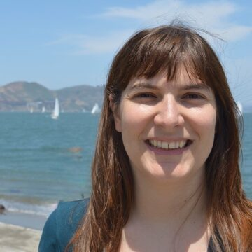
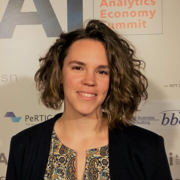
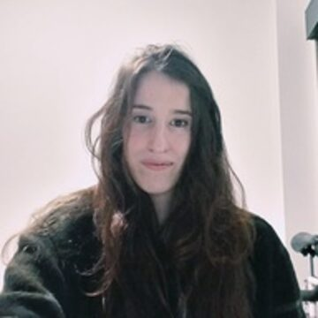
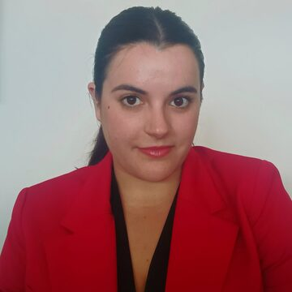
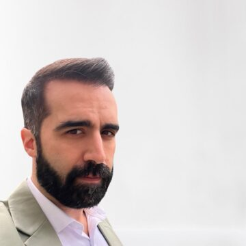
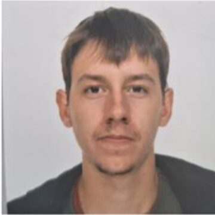

Silvia Pineda San Juan
Investigadora principal
Profesora Ayudante Doctor en la Facultad de Estudios Estadísticos de la UCM.
Personas que colaboran de manera regular con el grupo. Estamos abiertas/os a investigadores/as/es, personal predoctoral, postdoctoral y estudiantes.

Profesora Ayudante Doctor en la Facultad de Estudios Estadísticos de la UCM.

Profesora Titular en la Facultad de Estudios Estadísticos de la UCM.

Instituto de Investigación Hospital Universitario 12 de Octubre (imas12) y Fac. Estudios Estadísticos, UCM.

Facultad de Estudios Estadísticos, UCM.

Bioinformático y analista de datos del Servicio de Oncología Médica del Hospital Clínico San Carlos.

Facultad de Estudios Estadísticos, UCM.